La Z 9600 version 
S. Froger a réalisé un pack de Z2 comportant les Z 9609 en livrée d'origine et Z 9610 TER Pays de la Loire.
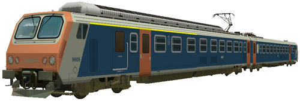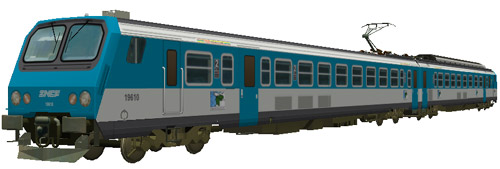
Ferrovia - 25 Octobre 2012
Z 9600
Z2 Bicourant Omnibus
Les Z 9600 sont des éléments automoteurs bicourants à deux caisses conçus pour les services régionaux omnibus et construits à 36 exemplaires en 1982/83. Elles roulent en Rhône Alpes sur l'étoile de Savoie et en Franche Comté entre Dijon et les lignes du Jura.
La composition de l'élément est la Z 9600 proprement dite (motrice à adhérence totale à quatre moteurs) et une ZR 19600.
Elles peuvent fonctionner en unités multiples jusqu'à quatre éléments entres elles et avec les Z 7300, Z 7500, Z 9500 et Z 11500 qui composent le parc des "Z2".
Quelques données techniques
Constructeur : Francorail-ANF
Tensions d'alimentation : continu 1,5 kV et monophasé 25 kV, 50 Hz
Chaîne de traction : Rhéostat sous courant continu, pont mixte sous monophasé
Motorisation : 2 moteurs à courant continu par bogie, 2 bogies moteurs sur la motrice.
Puissance totale : 1275 kW
Longueur : 50,2m
Masse : 116t
Pour plus d'info :
La fiche Z 9600 sur Wikipedia
Fiche technique des Z 9600 de Florent Brisou
L'inventaire des Z 9600 sur Trains du Sud-Ouest
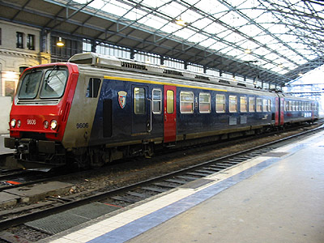
La Z 9606 Pays de la Loire en livrée d'origine à Tours (29/12/2001)
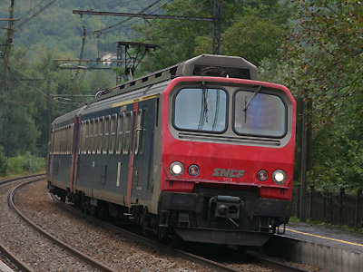
La Z 9636 Rhône Alpes à Chindrieu (16/09/2006)
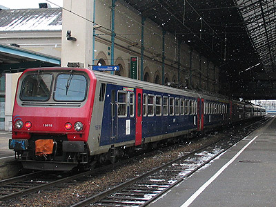
La Z 9616 en queue d'une UM4 sur un Lyon Perrache-Genève (03/02/2003)
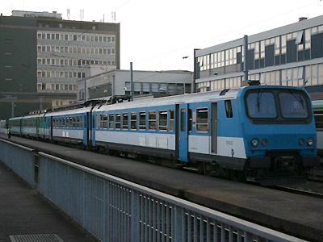
La Z 9630 Pays de la Loire et 9604 Bretagne à Nantes (19/06/2005)
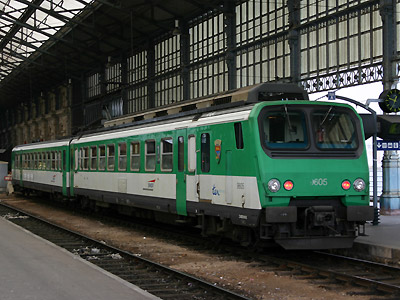
La Z 9605, une des deux seules en livrée Bretagne à Tours (28/12/2005)
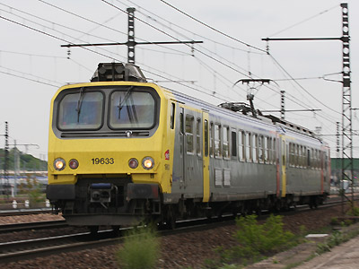
La Z 9633 en livrée Bourgogne à Dijon (14/05/2010)
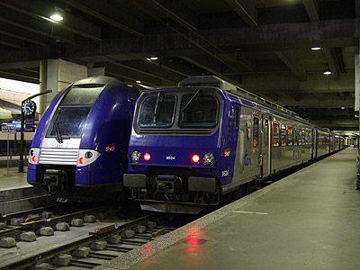
Il arrive que les Z 9600 Pays de la Loire s'aventurent jusque Paris Montparnasse.
Ici, les Z 9624 et Z 9607 en UM cotoient une Z26500 Centre (11/06/2010)
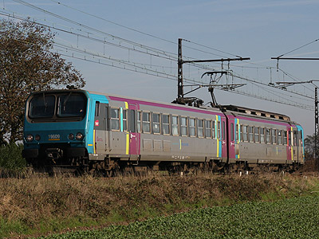
La Z 9609 dans la nouvelle livrée Pays de la Loire à Amilly sur un Chartres-
Nogent le Rotrou (31/10/2012)
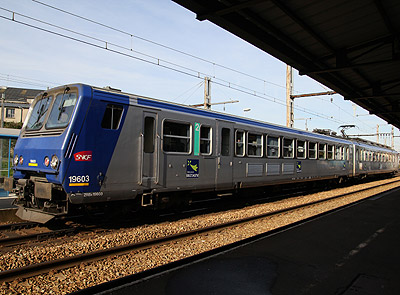
La Z 9603 Bretagne à Nogent le Rotrou (31/10/2012)
La Z 9600 version 
S. Froger a réalisé un pack de Z2 comportant les Z 9609 en livrée d'origine et Z 9610 TER Pays de la Loire.